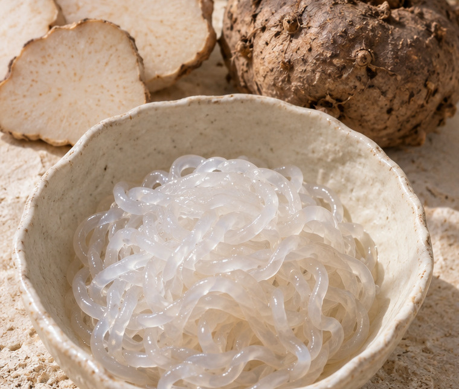
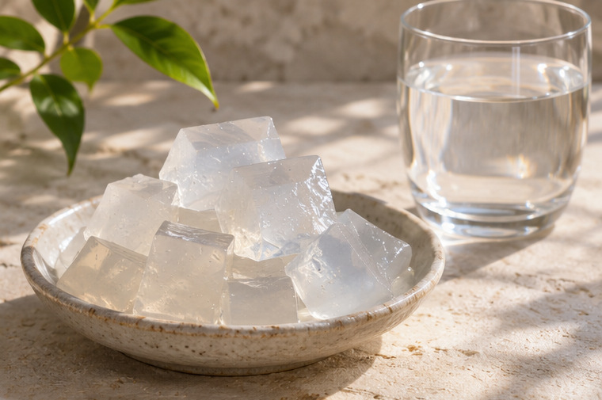
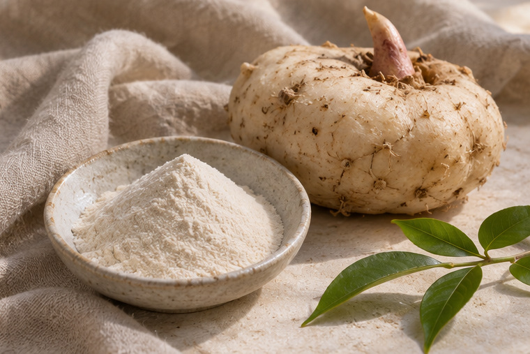

Konjac jelly is a snack format that's been quietly trending in Asia for years and is now showing up in fridges and desk drawers everywhere else. It isn't a diet gimmick and it isn't a candy in disguise. It's a jelly made from a plant-based fiber that behaves in a genuinely interesting way once it hits your stomach.
Here's what's actually going on inside it:



What konjac jelly is made of
The core ingredient is konjac glucomannan, a water-soluble fiber extracted from the root of the konjac plant (Amorphophallus konjac), which has been eaten in East Asia for centuries. On its own, glucomannan is a pale flour. Mixed with water and a setting agent, it turns into the firm, slightly bouncy jelly you know.
That's the whole trick. No gelatin, no mystery chemistry. Just a fiber that loves water.
Why it makes you feel full
Glucomannan can absorb many times its own weight in water, expanding into a gel in your stomach. That gel does a few things at once:
- It adds physical volume, which triggers stretch receptors that signal fullness.
- It slows gastric emptying, so food lingers a little longer instead of rushing through.
- It increases viscosity in the gut, which slows the absorption of sugars from your meal.
The research picture is consistent: konjac glucomannan has been shown to increase satiety and reduce subsequent food intake, likely through a mix of slowed digestion and effects on appetite-regulating hormones like GLP-1. In the EU, glucomannan even carries an authorised claim for contributing to weight loss in the context of an energy-restricted diet, at a dose of about 1g per serving with plenty of water.
The important caveat: it's a support tool, not a magic switch. It works because it helps you feel satisfied. It doesn't override a diet built on ultra-processed food and no sleep.
The fiber bonus you didn't ask about
Beyond fullness, glucomannan acts as a prebiotic fiber. It resists digestion in the small intestine and ferments in the colon, where beneficial bacteria break it down into short-chain fatty acids. Those compounds help feed the cells lining your gut and support a healthy intestinal barrier.
It also supports regularity. Fiber that holds water tends to make things move more smoothly, which is a polite way of saying konjac jelly is a good friend to your digestive system.
One practical note
Because glucomannan is so thirsty, it needs water. Konjac supplements in dry capsule or powder form have historically been linked to esophageal blockages when taken without enough liquid, which is why regulators advise taking them with a full glass or two of water. A jelly product is already hydrated, so this risk is largely designed out, but the principle stands: stay hydrated, don't overdo the dose, and don't take konjac fiber right before bed.
What to look for on the label
A good konjac jelly is short on ingredients. You want the konjac fiber to be doing the work, not sugar syrup or artificial colours. Check for added fibers like inulin or resistant maltodextrin, which extend the gut benefits, and look at the sugar content before anything else on the panel.
That's the thinking behind ours. Our functional konjac JEL1 jelly pairs glucomannan with inulin, resistant maltodextrin, marine collagen peptides, and a micronutrient mix of vitamin C, B6, B12 and zinc — so one jelly covers fullness, gut support, skin nourishment and daily micronutrients. Low calorie, plant-based fiber, no sugar load. If you're curious, Explore Gut & Glow.